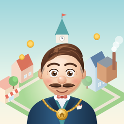
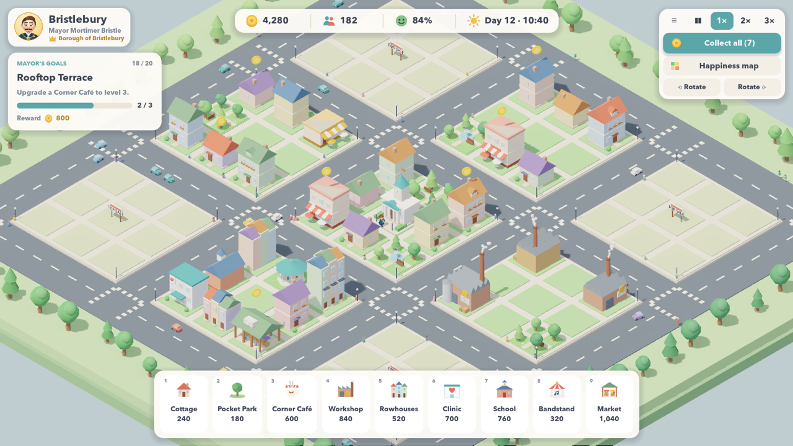

iPhone · iPad · Android · Steam
Mayor Moustache
Build a better town, block by block. Found the miniature town of Bristlebury with Mayor Mortimer Bristle and his magnificent handlebar moustache: place and upgrade buildings, collect rent, keep residents happy and grow from a hamlet into a city.

- 9 charming buildings, each with visibly different levels
- A 20-goal campaign guided by the mayor, then free sandbox building
- Happiness, rent, daily events, day and night, cars and townsfolk
- No ads, no in-app purchases, no account — plays fully offline
Türkçe
Bıyıklı Belediye Başkanı Mortimer Bristle ile minik Bristlebury kasabasını kur. Binalar yerleştir ve geliştir, kira topla, sakinleri mutlu et ve kasabanı köyden şehre büyüt. Reklam yok, uygulama içi satın alma yok, hesap gerekmez, tamamen çevrimdışı.
Privacy Policy / Gizlilik · Terms of Use / Kullanım Koşulları · Support / Destek